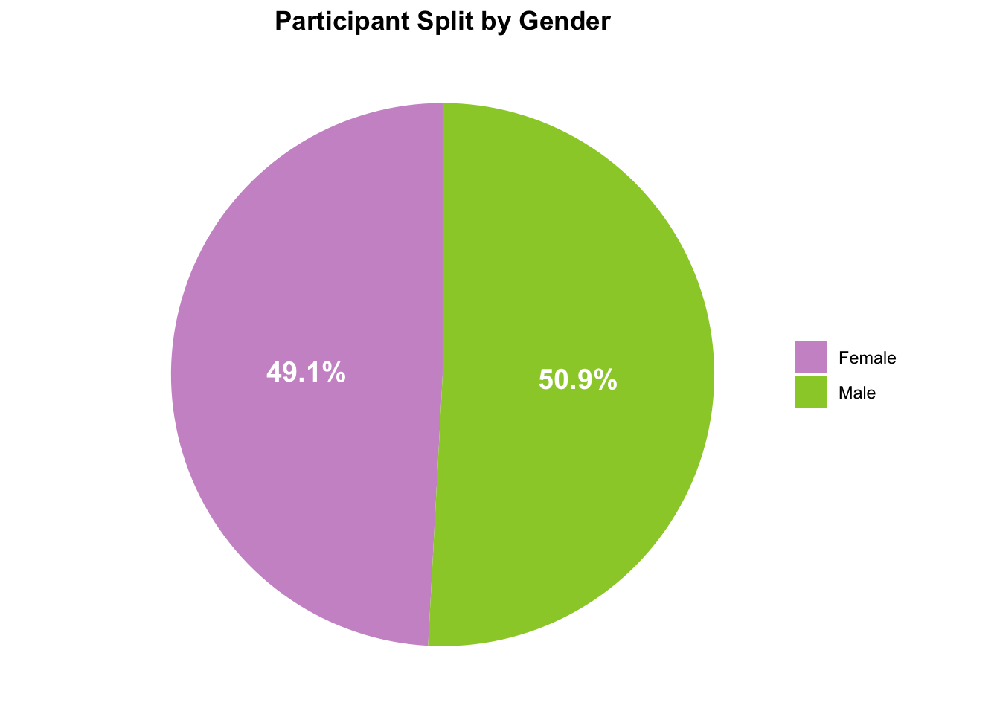
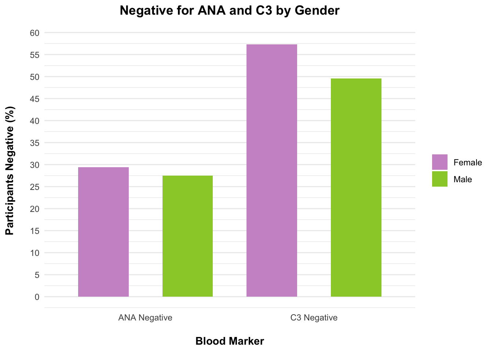
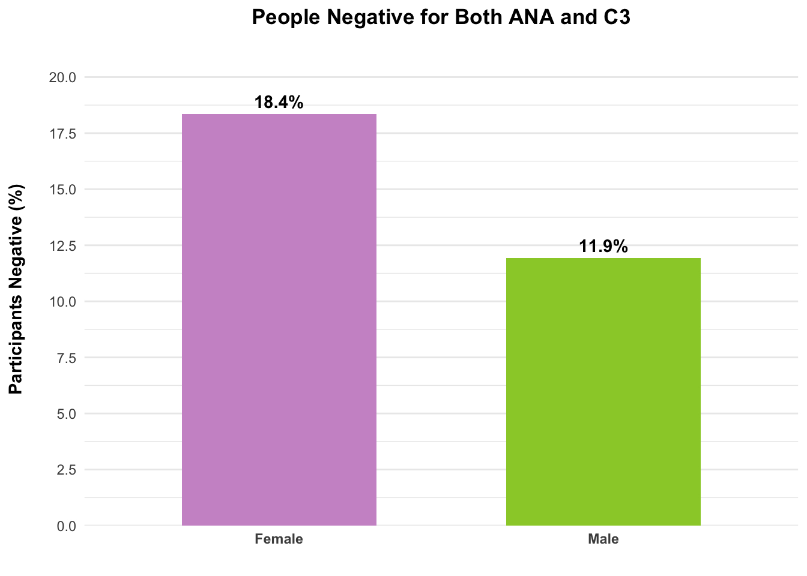
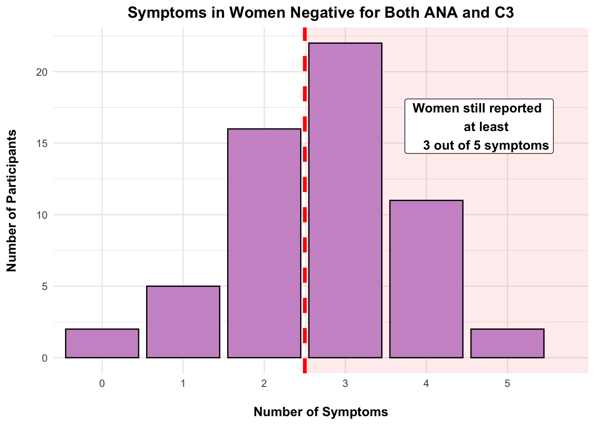

Data Vis Web Version B
“Your Labs Are Normal”: A Female Autoimmune Phenomenon
Around 5 to 10 percent of everyone in the world has an autoimmune disorder1. So, it is likely that you or someone you know is affected by one. Blood tests that check for things like Antinuclear Antibodies (ANAs) and Complement Component 3 (C3) are often used to diagnose these types of disorders. For the majority of people, these tests can provide a clear diagnostic to set them on their way to managing their symptoms.
However, this isn’t the case for everyone. Some people with an autoimmune disease will still test negative for markers like ANA and C3. For those who test negative, is there a difference between men and women? And, does blood marker negativity relate to how many symptoms someone has?
This article will show you some data about the proportion of men and women with autoimmune disorders and how they test in terms of ANA and C3 blood markers. As you will see, women were more often negative for these markers than men were, yet they still reported many symptoms.
Our data was taken from the Comprehensive Autoimmune Disorder Dataset by Abdullah Ragheb2. For each of the 643 participants, the data set recorded things like age, disease duration, blood markers (ANA and C3), and physical symptoms. These included Joint pain, skin rashes, generally feeling unwell, fatigue, and low grade fever.
Now, let’s get into what the data showed…
TipBUT WAIT! DO YOU HAVE AN AUTOIMMUNE DISORDER AND DONT HAVE THE TIME AND OR ENERGY TO READ ALL THESE WORDS? TLDR:
- Women were negative for ANA and C3 blood markers more often than men
- Women 6.5% more likely to be both ANA/C3 negative
- These ANA/C3 negative women still reported heavy symptom burden (3 out of 5 symptoms)
The Results
A Half-and-Half Split of Men and Women
Take a look at the above pie chart representing the proportion of men and women in the study. There was a roughly equal number of men and women with autoimmune disorders in this data set. So far, it doesn’t look like any one gender reported more instances of autoimmune disorders than the other…
But, how did their blood markers look?
Women slightly more ANA and C3 Negative

As you can see in this bar graph, rates of ANA negativity for women were slightly higher than men. The same went for C3. So, separately, women with autoimmune disorders seem to be slightly more likely to be negative for blood markers than men.
But what about those negative for both ANA and C3?
More Women Were Negative for Both

18.4% of women were negative for both ANA and C3, versus 11.9% for men. This graph shows that among women with autoimmune diseases, they were 6.5% more likely to be negative for both ANA and C3. The gap in the presence of autoimmune blood markers between men and women is clear.
But, if they are negative for the bio-markers, what did their symptoms look like?
“Normal” labs = Good to Go?

As you see here, for women in the sample who were completely negative, they still reported having symptoms. The most common number of symptoms was three out of five (consisting of joint pain, skin rashes, generally feeling unwell, fatigue, and a low grade fever). The red shaded portion of the graph highlights that despite being bio-marker negative, lots of women still experienced the majority of the symptoms the data set looked at!
TipKEY TAKE AWAY
In conclusion, women were more likely to be negative for autoimmune blood markers, yet still experience high symptom burden. In light of these results, it is worth recognizing that ‘normal labs’ do not necessarily tell you about someone’s symptomatic experience with an autoimmune disorder.
References
- Fairweather, D., & Rose, N. R. (2004). Women and autoimmune diseases. Emerging infectious diseases, 10(11), 2005–2011. https://doi.org/10.3201/eid1011.040367
- Abdullah Ragheb. (2024). Comprehensive Autoimmune Disorder Dataset [Dataset]. Kaggle. https://doi.org/10.34740/KAGGLE/DSV/9807734